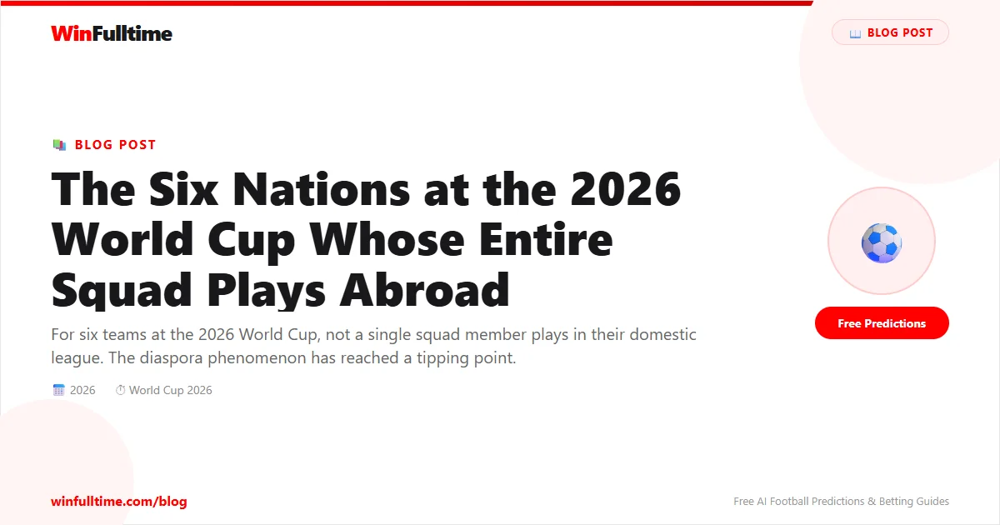

When Cape Verde take the pitch at the 2026 World Cup, every single player wearing the blue will fly in from outside the country. Not one of them plays in the Cape Verdean domestic league. Most were born in Portugal, France, or the Netherlands. They will have met each other only days before, assembled from club teams across Europe, speaking Portuguese and Kriolu, united by a passport and a heritage that most of them have never lived full-time. For Both Teams to Score predictions on these diaspora squads' matches, visit our betting guide.
Cape Verde are not alone. At least six nations at the 2026 tournament will arrive with 26-man squads drawn entirely from players based abroad. Not a single home-based player. Not one domestic league representative. The diaspora football nation has become a defining feature of the modern World Cup — and this year's edition marks the peak of the trend so far.
The phenomenon of all-foreign squads is the result of three converging forces. First, FIFA's eligibility rules, reformed in the 2020s, make it significantly easier for players to switch national teams if they have a genuine connection through parents or grandparents. The old"one senior cap locks you in" rule was replaced with a more flexible system that allows players who have played fewer than three senior matches — or none in three years — to switch federations. The change was intended to reduce the number of players"trapped" by early career decisions. It has also created a market for national teams to recruit diaspora talent aggressively.
Second, the growth of European youth academies has created a pipeline of technically proficient players with African, Caribbean, and Asian heritage who are developed in Europe from age 8 to 18. These players are often not good enough for the French, Dutch, or Portuguese senior teams — the competition is too fierce — but they are more than good enough for the countries of their parents or grandparents. European academies have, in effect, been developing talent for African and Caribbean national teams without intending to.
Third, the expansion of the World Cup to 48 teams has opened the door for smaller nations who rely disproportionately on diaspora talent. Cape Verde, Gambia, and Comoros would not have qualified for a 32-team tournament. The 48-team format gives them a genuine path to the World Cup, which in turn gives diaspora players a reason to commit.
Cape Verde — 26 players, 0 from domestic league. Primary sources: Portugal (14), France (6), Netherlands (3), England (2), Spain (1). Key player: Ryan Mendes (Lille, born in France).
Morocco — 26 players, 0 from domestic league. Primary sources: France (12), Spain (5), Netherlands (3), England (2), Italy (2), Belgium (1), Saudi Arabia (1). Key player: Achraf Hakimi (PSG, born in Spain).
Senegal — 26 players, 0 from domestic league. Primary sources: France (10), England (5), Italy (3), Spain (3), Saudi Arabia (3), Germany (2). Key player: Sadio Mané (Al-Nassr, born in Senegal, developed in France).
Algeria — 26 players, 0 from domestic league. Primary sources: France (14), England (4), Spain (3), Germany (2), Portugal (1), Italy (1), Belgium (1). Key player: Riyad Mahrez (Al-Ahli, born in France).
Gambia — 26 players, 0 from domestic league. Primary sources: England (7), Denmark (6), Norway (3), Germany (3), Sweden (2), Netherlands (2), Belgium (1), France (1), Switzerland (1). Key player: Yankuba Minteh (Newcastle/Brighton, born in Gambia).
Ghana — 26 players, 0 from domestic league. Primary sources: England (10), Germany (4), Spain (3), France (3), Italy (2), Netherlands (2), Belgium (1), Switzerland (1). Key player: Mohammed Kudus (West Ham, born in Ghana).
Morocco's run to the semi-finals of the 2022 World Cup was the ultimate validation of the diaspora model. Their squad featured 14 players born outside Morocco — 12 in France, one in Spain, one in the Netherlands. Sofyan Amrabat, their midfield general in Qatar, was born in the Netherlands. Hakim Ziyech was born in the Netherlands. Achraf Hakimi was born in Spain. Yassine Bounou was born in Canada. Even coach Walid Regragui was born in France. And yet this team played with a distinctly Moroccan identity — aggressive, organised, proud, and deeply connected to their heritage.
"The diaspora players bring something special," Regragui said during the 2022 tournament."They have the discipline of European football and the heart of Moroccan football. It is a powerful combination." Morocco have doubled down on this approach for 2026, scouting dual-nationality players across Europe's academies. Their youth recruitment network now covers 12 European countries. The result is a squad that is deeper, younger, and more technically gifted than the 2022 team.
Is the all-foreign squad a net positive or negative for football? The answers are more complex than they first appear. On one hand, diaspora recruitment allows small nations to compete on the world stage. Cape Verde, with a population of 600,000 and a domestic league that is semi-professional at best, would never produce a World Cup squad without its diaspora. The 48-team World Cup is supposed to be more inclusive, and diaspora talent is the mechanism through which inclusion happens.
On the other hand, the trend raises uncomfortable questions about the development of domestic football. If a national team can be built entirely without home-based players, what incentive does the federation have to invest in local academies, coaching education, and domestic league infrastructure? The fear is that diaspora recruitment becomes a shortcut that prevents the long-term development of the sport within the country.
"We are aware of the risk," said a CAF development officer who spoke on condition of anonymity. "If you can win by picking players developed in Europe, you stop asking why your own development system is not working. The diaspora is a gift, but it should be a complement, not a replacement."
At the 2026 World Cup, the six all-foreign nations will be joined by several others that come close. Jamaica will likely have 24 of 26 players from abroad. Tunisia and Cameroon might have 23 each. The trend is accelerating. By 2030, when the 48-team tournament expands further and eligibility rules become even more relaxed, the number of all-foreign squads could double.
For now, these six nations are the tip of a spear. They represent the future of international football — a future in which national teams are assembled from the global diaspora, where the passport matters more than the birthplace, and where the line between"domestic" and"foreign" has blurred into irrelevance. Whether that is good or bad for the sport is an open question. But it is happening. And the 2026 World Cup will be the most powerful demonstration yet. Learn how to bet on World Cup matches with our complete betting guide for beginners and experts.
Get free daily predictions for all 48 teams competing in 2026.
Generate optimized accumulator combinations from today's AI-powered predictions. Set your target odds and get instant ticket suggestions.
Free Ticket Builder →